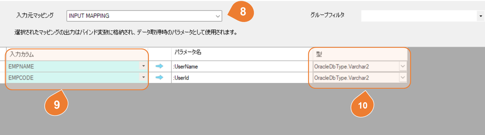

マッピングソースデータ設定
概要
ソースデータは、データベース、WEB Service/API、 CSV、Excel、JSON、XMLファイルから選択できます。
ターゲットデータへの接続設定は、事前にコネクション設定画面で行ってください。
設定
データベース
テーブル

| No | 項目 | 説明 |
|---|---|---|
| 1 | コネクション | コネクション設定画面で設定したコネクションを選択してください。 |
| 2 | タイプ | RDBコネクションを選択した場合、ソースタイプとしてテーブルまたはクエリを選択できます。 |
| 3 | テーブル | タイプに「テーブル」を選択した場合、RDBのテーブルとビューの一覧が表示されます。リストから該当するオブジェクトを選択してください。 |
| 4 | フィルター | データ抽出の条件がある場合、WHERE句を指定してください。 例： WHERE UPDATE_TIME >= SYSDATE - 1| |
| 5 | データ参照 | 既存のデータを参照する画面を開きます。 |
クエリ

| No | 項目 | 説明 |
|---|---|---|
| 6 | クエリ | ソースデータの取得方法としてSQLを使用したい場合、クエリを選択してください。 |
| 7 | クエリ内容 | データ抽出のためのSQLを記述してください。 例： SELECT EMPID , EMPNAME , DEPT_CODE FROM HR.EMP WHERE DEPT_CODE = '0003' |
バインド変数の設定
Simple Data Integrator では、あるマッピングの SELECT 結果を、別のマッピングの入力（バインド変数）として使用できます。これにより、マッピング間で柔軟かつ動的なデータ連携が可能になります。
機能概要
前段マッピング（インプットマッピング）の SELECT 結果を、後段マッピングのバインド変数に設定することで、その値をもとに動的なデータ処理を実行できます。
また、複数のパラメーターや複数行のインプットにも対応しています。
設定手順
1. データ抽出の条件のフィルターまたはクエリ内容にバインド変数を記述します。
| No | 項目 | 説明 |
|---|---|---|
| 4 | フィルター | データ抽出の条件がある場合は、WHERE 句にバインド変数を使用してください。 例： WHERE UPDATE_TIME >= :latest_date |
| 7 | クエリ内容 | データ抽出のための SQL に、適切な形式でバインド変数を記述してください。 例： SELECT EMPID, EMPNAME, DEPT_CODE FROM HR.EMP WHERE DEPT_CODE = :DEPT_CODE |
※ データベースの種類によってバインド変数の記述方法が異なります。以下の表を参照してください。
データベース別 バインド変数の使用形式
| データベース | バインド変数の形式 | 例（備考） |
|---|---|---|
| Oracle | :param |
SELECT * FROM users WHERE id = :id AND status = :status |
| SQL Server | @param |
SELECT * FROM users WHERE id = @id AND status = @status |
| PostgreSQL | @param |
SELECT * FROM users WHERE id = @id AND status = @status |
| MySQL | @param |
SELECT * FROM users WHERE id = @id AND status = @status |
| DB2 | @param |
SELECT * FROM users WHERE id = @id AND status = @status |
| ODBC | ? |
SELECT * FROM users WHERE id = ? AND status = ? |
2. バインド変数の詳細設定を行います。
「バインド変数設定」ボタンをクリックすると、バインド変数の詳細設定画面が開きます。

| No | 項目 | 説明 |
|---|---|---|
| 8 | 入力元マッピング | バインド変数の値を取得する入力元のマッピングを選択します。 |
| 9 | 入力カラム | 該当パラメータにバインドする値を持つカラムを指定します。 |
| 10 | パラメータ型 | バインド変数のデータ型を設定します。 |
※グループフィルターを使用してマッピングを絞り込むことができます。グループフィルターの選択は必須ではありません。
CSVファイル

| No | 項目 | 説明 |
|---|---|---|
| 11 | CSVファイル名 | 取込するCSVファイル名を入力します。 ファイルパターンで設定したい場合は、「対象ファイル詳細」ボタンを押して詳細設定を行ってください。 |
| 12 | 対象ファイル詳細 | 複数のCSVファイルを取込対象にしたい場合は、「対象ファイル詳細」ボタンを押して、詳細設定画面で設定を行ってください。 設定方法の詳細は、以下を参照してください。 :fa-book: ファイル詳細設定 |
| 13 | エンコーディング | CSVファイルのエンコーディングを指定してください。 例：UTF-8、Shift_JIS |
| 14 | ヘッダー行あり | ヘッダー行の有無を選択してください。 |
| 15 | ファイルからカラム情報取得 | ひな型CSVファイルを選択し、そのカラム情報を解析して一覧で表示します。 |
| 16 | カラム | ひな型CSVファイルのカラムを一覧表示するリスト。 |
| ※ | デリミタや囲み文字は自動判別されるため、指定する必要はありません。 |
Excelファイル

| No | 項目 | 説明 |
|---|---|---|
| 21 | Excelファイル名 | 取込するExcelファイル名を入力します。 ファイルパターンで設定したい場合は、「対象ファイル詳細」ボタンを押して詳細設定を行ってください。 |
| 22 | 対象ファイル詳細 | 複数のExcelファイルを取込対象にしたい場合は、「対象ファイル詳細」ボタンを押して、詳細設定画面で設定を行ってください。 設定方法の詳細は、以下を参照してください。 :fa-book: ファイル詳細設定 |
| 23 | シート | 取り込み対象のシート番号を選択してください。 ※番号は1から始まります。 |
| 24 | エンコーディング | Excelファイルのエンコーディングを指定してください。 例：UTF-8、Shift_JIS |
| 25 | ヘッダー行あり | ヘッダー行の有無を選択してください。 |
| 26 | ファイルからカラム情報取得 | ひな型Excelファイルを選択し、そのカラム情報を解析して一覧で表示します。 |
| 27 | カラム | ひな型Excelファイルのカラムを一覧表示するリスト。 |
JSONファイル

| No | 項目 | 説明 |
|---|---|---|
| 31 | JSONファイル名 | 取込するJSONファイル名を入力します。 ファイルパターンで設定したい場合は、「対象ファイル詳細」ボタンを押して詳細設定を行ってください。 |
| 32 | 対象ファイル詳細 | 複数のJSONファイルを取込対象にしたい場合は、「対象ファイル詳細」ボタンを押して、詳細設定画面で設定を行ってください。 設定方法の詳細は、以下を参照してください。 :fa-book: ファイル詳細設定 |
| 33 | ファイルから構造取得 | ひな型のJSONファイルを選択し、その構造を解析してツリービュー形式で表示する。 |
| 34 | 対象オブジェクト | データが配列で構成されている場合、配列内の各要素（明細行）を1レコードとして取り込むことができます。取り込み対象となる配列のオブジェクトを選択してください。 |
| 35 | 親オブジェクトを表示 | デフォルトでは、選択されたオブジェクトの下位レイヤのオブジェクトが表示されますが、親レイヤのオブジェクトも必要な場合は、このオプションをチェックしてください。 |
サンプルで表示されているオブジェクト一覧は、以下のJSON例です。
{
"orderno": 1,
"customercode": "A001",
"customeraddress":
{
"streetaddress":"長島一丁目1-1",
"city":"青森市",
"state": "青森県",
"postalcode":"030-8570"
},
"detail": [
{
"prodcode": 1,
"ordernumber": 3,
"price": 2000,
"amount": "6000"
},
{
"prodcode": 2,
"ordernumber": 2,
"price": 1700,
"amount": 3400
}
]
}
XMLファイル

| No | 項目 | 説明 |
|---|---|---|
| 41 | XMLファイル名 | 取込するXMLファイル名を入力します。 ファイルパターンで設定したい場合は、「対象ファイル詳細」ボタンを押して詳細設定を行ってください。 |
| 42 | 対象ファイル詳細 | 複数のXMLファイルを取込対象にしたい場合は、「対象ファイル詳細」ボタンを押して、詳細設定画面で設定を行ってください。 設定方法の詳細は、以下を参照してください。 :fa-book: ファイル詳細設定 |
| 43 | ファイルから構造取得 | ひな型のXMLファイルを選択し、その構造を解析してツリービュー形式で表示する。 |
| 44 | 対象要素 | データが配列で構成されている場合、配列内の各要素（明細行）を1レコードとして取り込むことができます。取り込み対象となる配列の要素を選択してください。 |
| 45 | 親要素を表示 | デフォルトでは、選択された要素の下位階層の要素が表示されますが、親階層の要素も必要な場合は、このオプションをチェックしてください。 |
| 46 | 属性を表示 | デフォルトでは、XMLの属性が表示されません。属性データも必要な場合は、このオプションをチェックしてください。 |
サンプルで表示されている要素一覧は、以下のXML例です。
<data>
<orderno>1</orderno>
<customercode>A001</customercode>
<customeraddress>
<streetaddress>長島一丁目1-1</streetaddress>
<city>青森市</city>
<state>青森県</state>
<postalcode>030-8570</postalcode>
</customeraddress>
<detail>
<prodcode>1</prodcode>
<ordernumber>3</ordernumber>
<price>2000</price>
<amount>6000</amount>
</detail>
<detail>
<prodcode>2</prodcode>
<ordernumber>2</ordernumber>
<price>1700</price>
<amount>3400</amount>
</detail>
</data>
ファイル詳細設定
| No | 項目 | 説明 |
|---|---|---|
| 51 | データ取込対象 | データ取込対象は、シングルファイルまたはファイル名パターンにマッチしたファイルリストとして設定できます。 |
| 52 | ファイル名パターン | データ取込対象としてファイル名のパターンを選択した場合、パターンの設定はワイルドカードおよび正規表現で行うことができます。 |
| 53 | ファイルマスク | ワイルドカードまたは正規表現のファイルマスクを入力してください。 |
| 54 | ソート対象 | 複数のファイルを対象とする場合、ファイル取込の順番を設定します。 |
| 55 | ソート順 | ソート順を設定してください。 |
| 56 | テスト | 設定されたファイルマスクに基づき、現在の対象ファイル一覧を表示します。 |
Web Service/ Web API

| No | 項目 | 説明 |
|---|---|---|
| 61 | エンドポイント | 相対URLを入力してください。 時間に関する動的パラメータの設定が可能です。 設定方法の詳細は、以下を参照してください。 :fa-book: 動的パラメータの設定について |
| 62 | リクエスト詳細設定 | リクエストの メソッド、ヘッダー、POSTボディ などの詳細情報を設定します。 |
| 63 | 更新 | エンドポイントから最新情報を取得します。 |
Web Service/ Web APIリクエスト詳細設定
| No | 項目 | 説明 |
|---|---|---|
| 71 | メソッド | リクエストのメソッドを選択します。GET と POST がサポートされています。 |
| 72 | エンドポイント | 相対URLを入力してください。 時間に関する動的パラメータの設定が可能です。 設定方法の詳細は、以下を参照してください。 :fa-book: 動的パラメータの設定について |
| 73 | テスト | Webサービス/Web API に対してアクセステストを実行します。 |
| 74 | ヘッダ | リクエストヘッダーを設定してください。 |
| 75 | ボディ | POSTの場合ボディを設定してください。 |
| 76 | Content-Type設定ボタン | ヘッダーの Content-Type を text、JSON、XML、HTML に自動設定するボタンです。 |
| 77 | レスポンス | テストを実行すると、レスポンスに関する情報を表示します。 |
| No | 項目 | 説明 |
|---|---|---|
| 81 | テキスト | ボディタイプが RAWテキスト の場合は、「テキスト」を選択してください。 |
| 82 | ボディテキスト | ボディテキストを入力してください。 時間に関する動的パラメータの設定が可能です。 設定方法の詳細は、以下を参照してください。 :fa-book: 動的パラメータの設定について |
| No | 項目 | 説明 |
|---|---|---|
| 83 | 動的生成 | ボディの内容が 動的生成 の場合は、「動的生成」を選択してください。 動的生成では、データベースから SELECT SQL に設定されたSQLの実行結果をボディとして POST します。 |
| 84 | コネクション | 対象となるデータベースを選択します。 |
| 85 | SELECT SQL | 実行するSQLを入力します。 |
Web Service/ Web APIリクエスト動的パラメータの設定について
設定方法は、{}で囲んだ式を評価し、計算した値を使用します。
| 例 | 設定方法 |
|---|---|
| 現在日付を使用する場合の設定例 | /api/v1/orders/{yyyyMMdd} /api/v1/orders/{yyyyMMdd} |
|
{ "orderno": 1, "customercode": "A001", "updatedate": "{yyyy/MM/dd HH:mm:ss}", } |
|
| 昨日の日付を使用する場合の設定例 | /api/v1/orders/{DateTime.Now.AddDays(-1).ToString("yyyyMMdd")} |
|
{ "orderno": 1, "customercode": "A001", "updatedate": "{DateTime.Now.AddDays(-1).ToString(\"yyyyMMdd\")}" } |